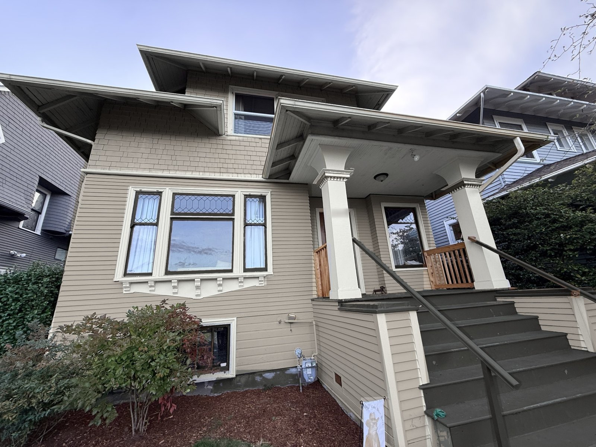
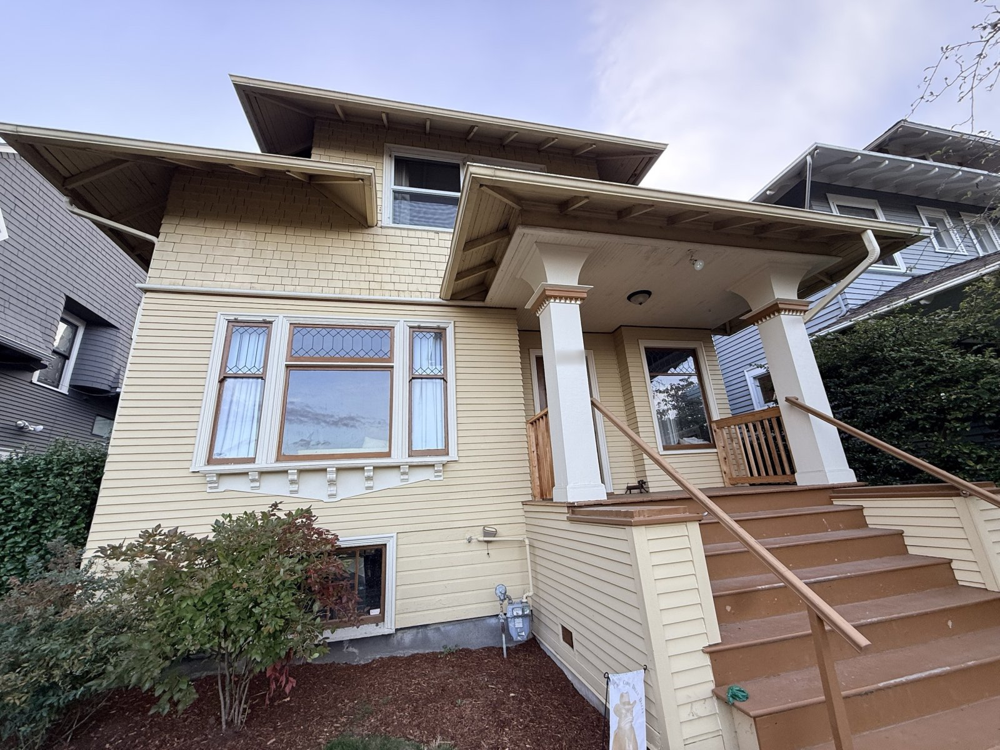

Each scheme is painted onto a photo of the house. All ten share the same white trim, soft-black window frames and porch, and natural cedar railings, so only the body color changes. Pick a scheme, then drag the slider to compare it with the house as it is today.


TodayWarm Greige
Same in every schemePure White trimIron Ore frames, porch and stepsNatural cedar railings
All ten side by side
How light each paint is
Light reflectance value (LRV) runs from 0 for black to 100 for white. The higher the number, the brighter the wall looks on a gray day.
Paint
050100
Lightness (LRV)
Approximate values, calculated from Sherwin-Williams' published color data.
How they compare
Scheme
Cheerful on gray days
Shows off the details
Broad buyer appeal
Stands apart from neighbors
Upkeep in Seattle
These ratings are a designer's judgment, not survey data.
How these were chosen
Only the body color changes.Every scheme uses Pure White trim, Iron Ore window frames and porch, and cedar railings left natural. Three paints plus wood looks deliberate, and it makes the ten easy to compare.
Dark window frames.Soft-black frames make the glass recede, so the leaded panes and the bay window read clearly from the street. On this house it's the most effective single change.
Light, mid-tone and deep.The schemes run from light to dark. Light bodies feel brightest on gray days, mid-tones hide dirt and fading best, and deep colors are the boldest but fade sooner on sunny walls.
The neighbors.Both neighboring houses are cool blue-gray with white trim. Warm neutrals, greens and olive stand apart from them, while the blue-grays blend into the block.
What sells.Zillow's 2017 analysis of more than 32,000 photos of sold homes found that greige exteriors sold for more than comparable homes in medium brown or tan, which sold for less. Front doors from navy to slate gray also sold for more.
Left out on purpose.Pastel and sky blues, dark greens, browns and tans, and all-white. On this house each one looked off, felt gloomy under Seattle skies, tends to sell for less, or needs more upkeep.
Before choosing
Narrow it to two or three, then buy sample quarts and paint 2 ft square boards. Look at them against the house on a gray day and a sunny one, since screens can't show paint exactly.
Suggested sheens: satin or low-luster on siding and shingles, semi-gloss on trim and window frames, and porch-and-floor enamel with an anti-slip additive on the steps.
With any of the light or mid-tone schemes, a front door in In the Navy adds one more accent.
The upper window is white vinyl, so it stays white in every rendering. That suits the white trim.
Exterior paint needs dry weather, so in Seattle plan the work for late spring through early fall.